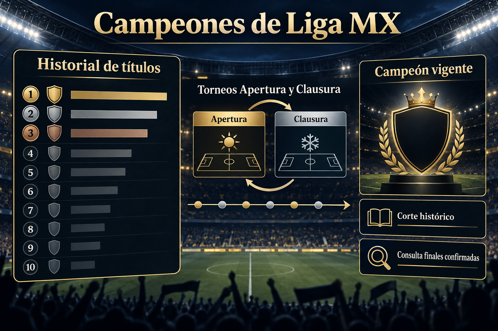

¿Quién es el máximo campeón de Liga MX?
América encabeza el historial con 16 campeonatos de liga. Guadalajara y Toluca tienen 12 cada uno, mientras Cruz Azul alcanzó 10 al conquistar el Clausura 2026.

Palmarés de Liga MX: clubes con más títulos
| Club | Títulos de liga | Referencia del palmarés |
|---|---|---|
| América | 16 | Máximo campeón histórico |
| Guadalajara | 12 | Segundo lugar compartido |
| Toluca | 12 | Segundo lugar compartido |
| Cruz Azul | 10 | Campeón del Clausura 2026 |
Esta tabla resume los cuatro clubes con más campeonatos de liga. Para ver la secuencia de cada edición, consulta los últimos 20 campeones de Liga MX.